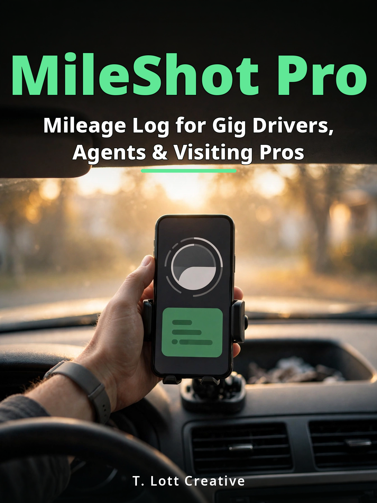

The Mileage Log You Buy Once
Shift-by-shift logging across every job you drive, IRS-standard reports for taxes or reimbursement, and your records on your phone — never in someone's cloud, never behind a paywall.

Watch MileShot Pro work (1 minute)
Video transcript
Every mile, logged — one log for every job you drive for. Shifts for every gig — start a shift, and every trip inherits the job. Photo odometer reader — snap the dash; you confirm every reading — nothing saves itself. Classify in one tap — Business, Personal, Commute, Medical, Charity — and a needs-a-category inbox, so nothing slips. I R S standard records — per-job totals at the split twenty twenty-six rates: seventy-two point five cents, then seventy-six. Reports that hold up — tax records if you're self-employed, employer reimbursement if you're W-2 — every trip with its date, miles, destination, and purpose. MileShot Pro — one payment, no subscription, no account. Your log stays on your phone. Find it at shop dot artistry store dot com.
Real screens from the app itself: a DoorDash shift starting, the odometer photo landing on the confirm screen, one-tap classification, per-job totals at the split 2026 rates, and both reports — tax records and employer reimbursement.
The log isn't optional — what you rent to keep it is
The mileage apps changed. The biggest one was bought out and tripled its price in under a year — same features, bigger bill. The "free" ones cap you at a handful of trips a month, which a real driving week uses up by Wednesday. One rival's drivers opened the app at tax time and found their own recorded trips locked until they paid.
If you drive for work, the log isn't optional. It's how you get paid — by the IRS at tax time if you're self-employed, or by your employer if you're on staff. The only question is what you rent to keep it.
MileShot Pro is $49.99. Once.
$49.99
One-time payment · Instant delivery after checkout
Checkout is handled securely by JVZoo, the retailer of this product. After payment, your download is delivered right away.
What's inside MileShot Pro
- Shift-first, across every job. Start a shift — DoorDash, Uber, Lyft, Instacart, Amazon Flex, Spark, real estate, sales, home health, or a job you name yourself. Every trip in the shift carries the job, including the miles between apps that no platform reports. Your reports break down by job and in total.
- Classification that keeps up. One tap per trip: Business, Personal, Commute, Medical, Charity. The app remembers each job's usual category, and stragglers wait in an inbox with a weekly nudge — clear them while the week is fresh (a log kept weekly counts as timely under Publication 463).
- Odometer photos, confirmed by you. Snap the dash at the start and end of a drive. The reading appears on a confirm screen; nothing saves unconfirmed, ever. No always-on GPS — your battery belongs to the job, not the logger. Jan-1 and quarterly anchors prove your total miles for the year.
- Reports that end the tax-time freeze. Built to the IRS record-keeping standard (Publication 463): date, miles, destination, purpose on every trip; 2026's split rates applied by trip date (72.5¢ through June, 76¢ from July — never blended); totals split Business / Commuting / Other; per-job totals; CSV and printable versions your CPA can take as-is.
- Working a W-2 job? Employees can't deduct unreimbursed mileage on a federal return — anyone who tells you otherwise is selling you something. For staff drivers, MileShot Pro prints an employer reimbursement report framed for an accountable plan, with the substantiation notes payroll needs and commute miles listed separately, the honest way.
- Built for real work: multiple vehicles; home-health purposes recorded as visit codes, never patient names; a plain-English card on the commute rules (they're fact-dependent — the app labels and explains, your tax pro decides).
How it works in three steps
MileShot Pro, the mileage log for gig drivers works in three simple steps:
- Step 1: Start a shift and pick the job — DoorDash, Uber, Instacart, real estate, home health, or one you name. Every trip inherits the job.
- Step 2: Snap the odometer when it matters. The reading lands on a confirm screen and nothing ever saves unconfirmed.
- Step 3: Run your reports: IRS-standard records per job, an IRS-standard CSV and Tax Records report, or an Employer Reimbursement report.
Questions, answered honestly
Why no automatic GPS tracking?
Automatic trackers miss trips and drain batteries — the most repeated complaints about mileage apps. MileShot Pro uses driver-confirmed odometer photos instead: no always-on GPS, no battery drain, nothing saved you did not confirm.
Why buy once instead of subscribing?
The big mileage apps went subscription and raised prices more than once, and some lock your own trips behind a paywall. MileShot Pro is bought once and owned: your trips, your records, never locked or capped.
What mileage rates does it use?
2026's split rates, applied by trip date: 72.5 cents through June, 76 cents from July 1 — never blended.
Is this tax advice?
No. The reports are built to the IRS record-keeping standard (Publication 463). Talk to a qualified tax professional about your own return.
Private by design
No account, no subscription, no cloud. Your location history never leaves your phone because the app never has it — it keeps odometer numbers, not maps. Export and back up any time; your records are never locked, capped, or held for ransom. Ever.
How you get it
Instant download after checkout — one ZIP with the app and a start-here guide. It installs on iPhone and Android (no app store, no account) and runs offline.
Support: Questions or trouble with your download? Support: tinglott@gmail.com
Disclaimer
Disclaimer: Please note that this product does not provide any guarantee of income or success. The results achieved by the product owner or any other individuals mentioned are not indicative of future success or earnings. This website is not affiliated with FaceBook or any of its associated entities. Once you navigate away from FaceBook, the responsibility for the content and its usage lies solely with the user. All content on this website, including but not limited to text, images, and multimedia, is protected by copyright law and the Digital Millennium Copyright Act. Unauthorized copying, duplication, modification, or theft, whether intentional or unintentional, is strictly prohibited. Violators will be prosecuted to the fullest extent of the law.
We want to clarify that JVZoo serves as the retailer for the products featured on this site. JVZoo® is a registered trademark of BBC Systems Inc., a Florida corporation located at 1809 E. Broadway Street, Suite 125, Oviedo, FL 32765, USA, and is used with permission. The role of JVZoo as a retailer does not constitute an endorsement, approval, or review of these products or any claims, statements, or opinions used in their promotion.